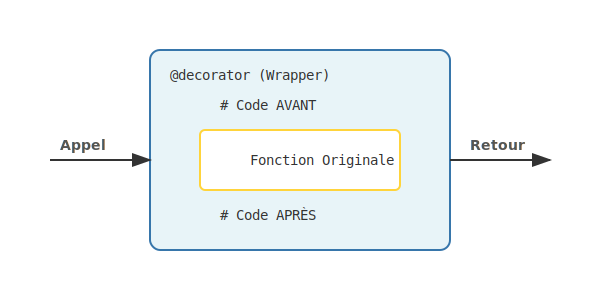

Guide pratique Python avec exemples concrets. Programmation moderne et efficace.
Histoire, philosophie, écosystème
Python est un langage de programmation interprété, polyvalent et très lisible. Créé en 1991 par Guido van Rossum, il est devenu l'un des langages les plus populaires au monde grâce à sa syntaxe claire et sa communauté active.
💡 Le nom "Python" vient des Monty Python, pas du serpent !
Le import this révèle le "Zen of Python", 19 aphorismes guidant la
conception du langage :
➡️ Tape import this dans
Python pour voir les 19 règles.
Python est utilisé partout, de l'automatisation à l'intelligence artificielle.
Django Flask FastAPINumPy Pandas MatplotlibTensorFlow PyTorch scikit-learnScripting Selenium RequestsScapy Paramiko PyCryptoAnsible Boto3 Docker SDK| Aspect | Python 2 (❌ Obsolète) | Python 3 (✅ Standard) |
|---|---|---|
print "Hello" |
print("Hello") |
|
| Division entière | 5/2 = 2 |
5/2 = 2.5 (// pour entier) |
| Strings | ASCII par défaut | Unicode (UTF-8) par défaut |
| Support | Fin de vie : 01/01/2020 | Activement maintenu |
2to3.
Déclaration, types, opérateurs
En Python, les variables sont des "étiquettes" qui pointent vers des objets en mémoire. Contrairement à d'autres langages, vous n'avez pas besoin de déclarer le type : Python utilise le typage dynamique. Le type est déterminé automatiquement lors de l'affectation.
Python distingue les types mutables (list, dict, set) des types immuables (int, float, str, tuple). Les objets immuables ne peuvent pas être modifiés après création : toute "modification" crée en réalité un nouvel objet.
Depuis Python 3.5, les type hints permettent d'annoter les types attendus. Ils n'affectent pas l'exécution mais améliorent la lisibilité et permettent aux outils comme mypy de détecter des erreurs.
# Variables (typage dynamique) name = "Alice" # str age = 25 # int price = 19.99 # float is_active = True # bool nothing = None # NoneType # Type hints (Python 3.5+) name: str = "Alice" age: int = 25 prices: list[float] = [9.99, 19.99] user: dict[str, int] = {"age": 25# Vérification de type type(name) # <class 'str'> isinstance(age, int) # True isinstance(age, (int, float)) # True # Conversion (casting) str(42) # "42" int("42") # 42 float("3.14") # 3.14 bool(0) # False list("abc") # ['a', 'b', 'c'] # Opérateurs arithmétiques 5 + 3 # 8 (addition) 5 - 3 # 2 (soustraction) 5 * 3 # 15 (multiplication) 5 / 3 # 1.666... (division) 5 // 3 # 1 (division entière) 5 % 3 # 2 (modulo) 5 ** 3 # 125 (puissance) # Opérateurs de comparaison 5 == 5 # True (égalité) 5 != 3 # True (différent) 5 > 3 # True (supérieur) 5 >= 5 # True (supérieur ou égal) # Opérateurs logiques True and False # False True or False # True not True # False
# Assigner ET utiliser dans une expression # Avant : n = len(data) if n > 10: print(f"Trop long: {n}") # Avec Walrus Operator : if (n := len(data)) > 10: print(f"Trop long: {n}") # Utile dans les while while (line := file.readline()): process(line) # Utile dans les list comprehensions filtered = [y for x in data if (y := compute(x)) > 0]
f"Hello {name}" pour l'interpolation de
chaînes. C'est la méthode la plus lisible et performante depuis Python 3.6.Conditions, boucles
Les structures de contrôle permettent de diriger l'exécution du programme. Python utilise l'indentation (espaces) pour délimiter les blocs de code, contrairement aux accolades dans d'autres langages.
La structure if/elif/else permet les branchements conditionnels. L'opérateur
ternaire x if condition else y est une forme compacte pour les cas simples.
Python 3.10 introduit match/case (pattern matching), plus puissant que switch/case
car il peut déconstruire des structures complexes.
# if / elif / else if age < 18: print("Mineur") elif age < 65: print("Adulte") else: print("Senior") # Ternaire status = "Majeur" if age >= 18 else "Mineur" # Match (Python 3.10+) match code: case 200: print("OK") case 404: print("Not Found") case _: print("Error")
# for avec range for i in range(5): print(i) # 0, 1, 2, 3, 4 # for sur itérable for fruit in fruits: print(fruit) # for avec enumerate for i, val in enumerate(lst): print(f"{i}: {val}") # for/else (No Break) for x in data: if x == target: break else: print("Not found") # while while condition: # ... break # sortir continue # suivant
def, lambda, décorateurs
Les fonctions permettent de regrouper du code réutilisable. En Python, elles sont définies avec
def et peuvent retourner une valeur avec return.
*args collecte les arguments positionnels en tuple, **kwargs collecte
les arguments nommés en dictionnaire. Les lambdas sont des fonctions anonymes
sur une ligne.
Les décorateurs (@decorator) modifient le comportement d'une fonction sans changer son code source. Ils sont très utilisés pour le logging, caching, authentification, etc.
# Fonction simple def greet(name): return f"Hello {name}!" # Valeur par défaut def power(base, exp=2): return base ** exp # Type hints def add(a: int, b: int) -> int: return a + b # *args et **kwargs def func(*args, **kwargs): print(args) # tuple print(kwargs) # dict # Lambda double = lambda x: x * 2Le Pattern Décorateur
Décorateur# Décorateur (Wrapper) def decorator(func): def wrapper(*args): print("LOG: Before call") result = func(*args) print("LOG: After call") return result return wrapper @decorator def say_hello(name): print(f"Hello {name}!")Résultat attendugreet("Python") → "Hello Python!" power(2, 8) → 256 double(5) → 10
list, dict, tuple, set
List : séquence ordonnée et modifiable. Tuple : séquence ordonnée et immuable. Set : collection non-ordonnée de valeurs uniques. Dict : paires clé-valeur.
Les comprehensions permettent de créer des collections de manière concise :
[x**2 for x in range(10)] est plus pythonique que la boucle équivalente.
Choisissez le bon type : list pour l'ordre, set pour l'unicité et les opérations ensemblistes, dict pour les associations clé-valeur, tuple pour les données immuables.
# Création fruits = ["pomme", "banane", "orange"] nums = list(range(5)) # Accès fruits[0] # "pomme" fruits[-1] # "orange" fruits[1:3] # ["banane", "orange"] # Méthodes fruits.append("kiwi") fruits.insert(0, "mangue") fruits.remove("banane") fruits.pop() fruits.sort() fruits.reverse() # List comprehension squares = [x**2 for x in range(10)] evens = [x for x in nums if x % 2 == 0]
# Création user = { "name": "Alice", "age": 25, "email": "alice@example.com" } # Accès user["name"] # "Alice" user.get("age", 0) # 25 (défaut: 0) # Méthodes user.keys() # clés user.values() # valeurs user.items() # (clé, valeur) user.update({"city": "Paris"}) # Dict comprehension squares = {x: x**2 for x in range(5)}
# Immuable point = (10, 20) x, y = point # unpacking # Named tuple from collections import namedtuple Point = namedtuple('Point', ['x', 'y']) p = Point(10, 20) p.x # 10
# Valeurs uniques s = {1, 2, 3} s.add(4) s.remove(1) # Opérations a | b # union a & b # intersection a - b # différence
Classes, héritage, dataclass
La Programmation Orientée Objet permet de modéliser des entités avec leurs attributs (données) et
méthodes (comportements). self représente l'instance courante.
L'héritage permet de créer des classes spécialisées. @property crée
des getters/setters élégants. @staticmethod et @classmethod
définissent des méthodes de classe.
Les dataclasses (Python 3.7+) génèrent automatiquement __init__, __repr__, __eq__ pour les classes de données simples.
class User: # Attribut de classe count = 0 def __init__(self, name: str, age: int = 0): self.name = name # public self._age = age # protected self.__secret = "..." # private User.count += 1 def greet(self) -> str: return f"Hello, I'm {self.name}" @property def age(self) -> int: return self._age @staticmethod def info(): return "User class" @classmethod def get_count(cls) -> int: return cls.count # Héritage & MRO # Python utilise l'algorithme C3 Linearization pour résoudre l'héritage multiple (D -> B -> C -> A) # Voir l'attribut __mro__ sur une classe.
try/except, raise
Les exceptions permettent de gérer les erreurs de manière élégante. try contient le
code risqué, except attrape les erreurs, finally s'exécute toujours.
Python distingue de nombreux types d'exceptions : ValueError,
TypeError, KeyError, IndexError, etc. Capturez toujours
l'exception la plus spécifique possible.
Créez vos propres exceptions en héritant de Exception pour des erreurs métier
spécifiques à votre application.
# try / except / else / finally try: result = 10 / x except ZeroDivisionError: print("Division par zéro!") except (TypeError, ValueError) as e: print(f"Erreur: {e}") else: print("Succès!") # si pas d'erreur finally: print("Nettoyage") # toujours # Lancer une exception raise ValueError("Message d'erreur") raise Exception("Erreur générique") # Exception personnalisée class UserNotFoundError(Exception): def __init__(self, user_id: int): super().__init__(f"User {user_id} not found") # Assert (debug) assert x > 0, "x doit être positif"
Lecture, écriture, JSON
Utilisez toujours with open() pour garantir la fermeture automatique du fichier,
même en cas d'erreur. C'est le pattern "context manager".
Les modes : 'r' lecture, 'w' écriture (écrase), 'a'
append, 'b' binaire. Spécifiez toujours encoding='utf-8' pour le
texte.
pathlib.Path (Python 3.4+) est l'approche moderne pour manipuler les chemins de
manière portable entre Windows/Linux/Mac.
# Lecture (with = fermeture auto) with open("file.txt", "r", encoding="utf-8") as f: content = f.read() # tout lines = f.readlines() # liste for line in f: # itérer print(line.strip()) # Écriture with open("file.txt", "w") as f: f.write("Hello\n") # Append with open("file.txt", "a") as f: f.write("New line\n") # JSON import json # Sauvegarder with open("data.json", "w") as f: json.dump(data, f, indent=2) # Charger with open("data.json", "r") as f: data = json.load(f) # Pathlib (moderne) from pathlib import Path p = Path("folder/file.txt") p.exists() p.read_text() p.write_text("content")
import csv import pickle # import yaml # pip install pyyaml # CSV Lecture with open("data.csv") as f: reader = csv.reader(f) for row in reader: print(row) # Pickle (Sérialisation binaire objets Python) data = {"temp": 24.5, "hum": 60} with open("data.pkl", "wb") as f: pickle.dump(data, f) with open("data.pkl", "rb") as f: loaded = pickle.load(f)
import, pip, venv
Les modules organisent le code en fichiers réutilisables. Un package est un dossier contenant un
__init__.py. Python cherche les modules dans sys.path.
Utilisez des environnements virtuels (venv) pour isoler les dépendances de chaque projet. C'est une bonne pratique essentielle.
pip est le gestionnaire de packages. requirements.txt liste les
dépendances pour reproduire l'environnement sur une autre machine.
# Import standard import os import sys import json from datetime import datetime, timedelta from pathlib import Path from typing import List, Dict, Optional # Alias import numpy as np import pandas as pd # Depuis un module local from mypackage.module import function from . import sibling # relatif
# Virtual environment python -m venv venv source venv/bin/activate # Linux/Mac venv\Scripts\activate # Windows # Pip pip install package pip install -r requirements.txt pip freeze > requirements.txt # Exécution python script.py python -m module
Méthodes, formatage
Les strings Python sont immuables : chaque modification crée une nouvelle
chaîne. Les méthodes comme upper() retournent une nouvelle string sans modifier
l'originale.
Les f-strings (Python 3.6+) sont la méthode recommandée pour le formatage :
f"Hello {name}". Elles sont plus lisibles et plus rapides que
.format().
Pour la manipulation intensive de strings, utilisez str.join() plutôt que la
concaténation répétée + qui crée de nombreux objets intermédiaires.
s = "Hello World" # Méthodes s.upper() # "HELLO WORLD" s.lower() # "hello world" s.title() # "Hello World" s.strip() # supprime espaces s.split(" ") # ["Hello", "World"] "-".join(["a", "b"]) # "a-b" s.replace("o", "0") # "Hell0 W0rld" s.startswith("He") # True s.endswith("ld") # True s.find("o") # 4 (index) s.count("o") # 2 s.isdigit() # False s.isalpha() # False # Formatage f"Hello {name}" # f-string f"{price:.2f}" # "19.99" f"{n:05d}" # "00042" "Hello {}".format(name) # ancien "Hello {name}".format(name="Alice")
Patterns, recherche, validation
Les expressions régulières (regex) sont des séquences de caractères définissant un motif de recherche. Elles sont utilisées pour la validation (emails, téléphones), l'extraction de données, le remplacement de texte et le parsing.
En Python, le module re fournit toutes les fonctionnalités regex. Les patterns sont
généralement définis avec des raw strings (r"pattern") pour éviter les
problèmes d'échappement avec les backslashes.
Les méthodes principales sont match() (début de chaîne), search()
(première occurrence), findall() (toutes les occurrences) et sub()
(remplacement).
import re # Patterns de base pattern = r"\d+" # chiffres pattern = r"[a-zA-Z]+" # lettres pattern = r"\w+" # alphanumérique pattern = r"\s+" # espaces # Méthodes principales re.match(pattern, text) # début seulement re.search(pattern, text) # première occurrence re.findall(pattern, text) # liste de toutes re.finditer(pattern, text) # itérateur re.sub(pattern, repl, text) # remplacer re.split(pattern, text) # découper # Exemple: extraire emails text = "Contact: alice@mail.com, bob@test.fr" emails = re.findall(r"[\w.]+@[\w.]+\.\w+", text) # ['alice@mail.com', 'bob@test.fr'] # Groupes de capture m = re.search(r"(\d{2})/(\d{2})/(\d{4})", "Date: 25/12/2025") m.group(0) # "25/12/2025" (tout) m.group(1) # "25" (jour) m.groups() # ('25', '12', '2025') # Groupes nommés pattern = r"(?P<day>\d{2})/(?P<month>\d{2})/(?P<year>\d{4})" m = re.search(pattern, "25/12/2025") m.group("year") # "2025" # Compilation (performance) regex = re.compile(r"\d+") regex.findall(text)
\d chiffre \D non-chiffre \w mot
\W non-mot \s espace \S non-espace . tout
* 0+ + 1+ ? 0-1 {n}
exactement n {m,n} m à n fois
^ début $ fin \b limite de mot
() capture (?:) non-capture (?P<name>)
nommé | ou
yield, itertools, performances
Les générateurs sont des fonctions qui produisent une séquence de valeurs paresseusement (lazy
evaluation). Au lieu de retourner toutes les valeurs d'un coup, ils les "génèrent" une à une
avec yield.
L'avantage principal est la mémoire : un générateur ne stocke pas toutes les valeurs en mémoire. Idéal pour traiter de gros fichiers ou des séquences infinies.
Les generator expressions sont la version compacte :
(x**2 for x in range(10)) au lieu d'une list comprehension.
# Fonction générateur def countdown(n): while n > 0: yield n n -= 1 for i in countdown(5): print(i) # 5, 4, 3, 2, 1 # Generator expression squares = (x**2 for x in range(1000000)) # économe en mémoire # Générateur infini def infinite_counter(): n = 0 while True: yield n n += 1 # yield from (délégation) def flatten(nested): for item in nested: if isinstance(item, list): yield from flatten(item) else: yield item # itertools from itertools import count, cycle, repeat, chain, islice count(10) # 10, 11, 12, ... cycle([1,2,3]) # 1, 2, 3, 1, 2, 3, ... repeat("A", 5) # A, A, A, A, A chain([1], [2,3]) # 1, 2, 3 islice(gen, 10) # 10 premiers éléments # Interaction (Coroutines avancées) def grep(pattern): print(f"Looking for {pattern}") while True: line = (yield) if pattern in line: print(line) g = grep("python") next(g) # Amorcer g.send("Hello python") # Envoie valeur au yield g.throw(RuntimeError, "Stop") g.close()
async/await, asyncio, concurrence
La programmation asynchrone permet d'exécuter des opérations I/O (réseau, fichiers) de manière non-bloquante. Pendant qu'une tâche attend une réponse, d'autres tâches peuvent s'exécuter.
async def définit une coroutine. await suspend l'exécution jusqu'à ce
que le résultat soit disponible. C'est idéal pour les applications web, les APIs et le scraping.
Le module asyncio gère la boucle d'événements et l'orchestration des tâches
concurrentes.
import asyncio # Coroutine async def fetch_data(url): print(f"Fetching {url}") await asyncio.sleep(1) # simule I/O return f"Data from {url}" # Exécution séquentielle async def main(): result1 = await fetch_data("url1") result2 = await fetch_data("url2") return [result1, result2] # Exécution parallèle async def main_parallel(): tasks = [ fetch_data("url1"), fetch_data("url2"), fetch_data("url3") ] results = await asyncio.gather(*tasks) return results # Lancer asyncio.run(main()) # Avec timeout try: result = await asyncio.wait_for(fetch_data("url"), timeout=5.0) except asyncio.TimeoutError: print("Timeout!") # HTTP avec aiohttp import aiohttp async def fetch_url(session, url): async with session.get(url) as response: return await response.text()
pytest, unittest, assertions
Les tests unitaires vérifient que chaque composant de votre code fonctionne correctement de manière isolée. Ils permettent de détecter les régressions et de documenter le comportement attendu.
pytest est le framework de test le plus populaire en Python. Il découvre
automatiquement les tests et offre des assertions riches et lisibles.
Une bonne pratique est de tester les cas normaux, les cas limites et les erreurs attendues.
# test_math.py import pytest def add(a, b): return a + b # Test simple def test_add(): assert add(2, 3) == 5 assert add(-1, 1) == 0 # Test d'exception def test_error(): with pytest.raises(ValueError): int("abc") # Paramétrage @pytest.mark.parametrize("a,b,expected", [ (1, 2, 3), (0, 0, 0), (-1, -1, -2), ]) def test_add_param(a, b, expected): assert add(a, b) == expected # Fixture (setup) @pytest.fixture def sample_data(): return [1, 2, 3] def test_with_fixture(sample_data): assert len(sample_data) == 3
import unittest class TestMath(unittest.TestCase): def setUp(self): # Avant chaque test self.data = [1, 2, 3] def test_sum(self): self.assertEqual( sum(self.data), 6 ) def test_len(self): self.assertEqual( len(self.data), 3 ) def test_error(self): with self.assertRaises(IndexError): self.data[10] if __name__ == "__main__": unittest.main()
# Exécuter les tests pytest # tous les tests pytest test_file.py # un fichier pytest -v # verbose pytest -k "test_add" # par nom pytest --cov=mypackage # avec couverture
Fonctions built-in, modules, dunder methods
int() float() str() bool()
list() dict() tuple() set() bytes()
complex()
len() range() enumerate()
zip() map() filter() sorted()
reversed() iter() next()
abs() min() max() sum()
round() pow() divmod() bin() hex()
oct()
print() input() open() format()
type() isinstance() issubclass()
hasattr() getattr() setattr() delattr()
dir() vars()
all() any() id() hash()
callable() repr() eval() exec()
compile() globals() locals()
| Module | Description | Fonctions clés |
|---|---|---|
os |
Système d'exploitation | getcwd, listdir, mkdir, remove, environ |
sys |
Paramètres système | argv, exit, path, version |
json |
JSON | load, dump, loads, dumps |
re |
Expressions régulières | match, search, findall, sub |
datetime |
Dates et heures | datetime, date, time, timedelta |
pathlib |
Chemins modernes | Path, exists, read_text, write_text |
collections |
Types avancés | Counter, defaultdict, namedtuple, deque |
itertools |
Itérateurs | count, cycle, chain, islice, groupby |
functools |
Fonctions | lru_cache, partial, reduce, wraps |
random |
Aléatoire | random, randint, choice, shuffle |
math |
Mathématiques | sqrt, ceil, floor, sin, cos, pi |
logging |
Journalisation | debug, info, warning, error, critical |
__init__ __new__ __del__
__repr__ __str__
__eq__ __ne__ __lt__ __le__
__gt__ __ge__
__add__ __sub__ __mul__
__truediv__ __floordiv__ __mod__ __pow__
__len__ __getitem__ __setitem__
__delitem__ __contains__ __iter__ __next__
__enter__ __exit__ __call__
__hash__ __bool__
__getattr__ __setattr__ __delattr__
__getattribute__ __dir__
NumPy, Pandas, Matplotlib
Python est le leader mondial de la Data Science. Voici les 3 piliers de l'écosystème.
Calcul matriciel haute performance. Les ndarray sont bien plus rapides et économes
que les listes Python.
Manipulation de données structurées (DataFrames). C'est le "Excel programmable" de Python.
import numpy as np import pandas as pd import matplotlib.pyplot as plt # --- 1. NumPy --- arr = np.array([1, 2, 3]) print(arr * 2) # [2 4 6] (vectorisation !) # --- 2. Pandas --- df = pd.DataFrame({ "Nom": ["Alice", "Bob"], "Age": [25, 30] }) df["Age"].mean() # 27.5 df.to_csv("export.csv") # --- 3. Matplotlib --- x = np.linspace(0, 10, 100) y = np.sin(x) plt.plot(x, y) plt.show()
Linting, Typing, Structure projet
Un code Python professionnel ne se limite pas à la syntaxe. Il respecte des normes strictes pour être maintenable.
# Configuration centralisée (PEP 518) [tool.black] line-length = 88 [tool.ruff] select = ["E", "F", "I"] ignore = ["E501"] [project] name = "my-app" version = "1.0.0" dependencies = [ "fastapi>=0.100", "pydantic>=2.0" ]
Flask vs FastAPI
from flask import Flask, jsonify app = Flask(__name__) @app.route("/hello/<name>") def hello(name): return jsonify({"msg": f"Hello {name}"}) if __name__ == "__main__": app.run(debug=True)
Simple, mature, idéal pour petits projets et SSR (Jinja2).
from fastapi import FastAPI app = FastAPI() @app.get("/hello/{name}") async def hello(name: str): # Auto-documentation (Swagger UI) return {"msg": f"Hello {name}"} # Run: uvicorn main:app --reload
Rapide, Async natif, Docs auto, Typage strict.